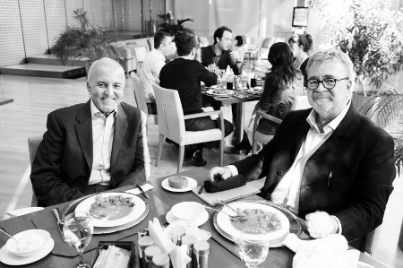

“Tavadan donmuş yağı çıkartmayı iyi bilirim”
Mutfakta gelenekçi misiniz yoksa modern mi?
Ortaya karışıktan yanayım. İki-üç gün geleneksel yemeklerden hoşlanıyorum, sonra değişiklik istiyorum ve modern bir şeyler yiyorum. Sonra dönüp dolaşıp tekrar klasiklere geliyorum.
Mutfakla aranız nasıl? İlk ne zaman girdiniz ve ne pişirdiniz?
En iyi pişirdiğim yemek omlet. Omlette peyniri, domatesi çok severim. Peynir çok sert olmamalı, sert ve yumuşak arası olmalı. Başka yeteneklerim yok, ama gerçekten çok güzel bulaşık yıkarım. Bu konuda çok iddialıyım, tavadaki donmuş yağın nasıl çıkartılacağını çok iyi bilirim. Yıllar önce Brüksel’e taşındık, eşim Cemre NATO’da çalışıyordu. Akşam yemekler yenir, bulaşık ertesi sabaha kalırdı. Eşim işe gittikten sonra mutfağa girer, bulaşıkları yıkardım. O dönemde kitap yazıyordum, yazmaya ara verince bulaşık yıkardım; benim için en güzel terapi oydu.
Belçika’daki yaşam, damağınıza neler kattı?
Şarabı Belçika’da keşfettim. O zamanlar Türkiye’de şarap mı içiyorsun, sirke mi içiyorsun çok belli değildi. Orada iki şey öğrendim: Birincisi, hangi yemekle hangi şarabın içileceğini, ikincisi de porsiyonların Türkiye’dekinin aksine daha küçük olduğunu. Ayrıca sos kültürünü, sosun yemeğe verdiği ekstra tatları keşfettim.
Midyeyle, birayla, patates kızartmasıyla dostluğunuz orada mı başladı?
Patates kızartması kültürünü orada edindim, çünkü başka türlü kızartılıyor. Hiç kimse onlar gibi lezzetli yapamıyor. İki kez kızartıp, dışını kıtır kıtır, içini yumuşacık yapıyorlar. Aynı şekilde midyeyi de tavada çok farklı pişiriyorlar. Maalesef o kadar temizini ve o kadar lezzetlisini Türkiye’de bulamıyorum.
Rus mutfağıyla aranız nasıldı, orada en çok neyi yiyordunuz?
Rus mutfağıyla başım hiç hoş değildi. Bana çok ağır geliyordu Rus yemekleri. Kahvaltıda çeşit çeşit havyar, çeşit çeşit yağ ve soğuk et yiyorlardı. Tabii yoksulluk içindeki Rusya’dan bahsediyorum. Şimdi bir tabağı 100 dolara İtalyan yemeği yiyorsunuz. Rus mutfağı yok oldu diyebilirim.
Sizce Türk mutfağının dünya mutfakları arasında yeri nedir?
Ne yazık ki Türk mutfağı tanınmıyor. Yurtdışında Ermeni mutfağı var, Yunan mutfağı var; Türk mutfağı yok. Hep Fransız, Çin, İtalyan mutfağı öne çıkıyor. Türk mutfağının tanıtılması yıllar boyu beceremediğimiz bir konu. Her şeyden önce Türkiye’ye gelen turistler, otellerin açık büfelerindeki yemeklerle Türk mutfağını tanıyamaz.
Hangi bölgenin yemekleri ağzınızı sulandırır?
Güneydoğu mutfağı bana çok ağır, çok baharatlı ve aşırı etçi geliyor. Eti ben de seviyorum, ama o tür et bana çok ağır geliyor. Ege mutfağı beni daha çok rahatlatıyor, çünkü Avrupa yemeği ile geleneksel yemek çok güzel harmanlanmış bu mutfakta. Yunan adalarına çok sık gidiyorum. Orada bir şey çok dikkatimi çekti: Aslında Yunan adalarında müthiş bir yemek ya da müthiş bir tat yok, ama sunum ve servis çok güzel. Masayı öyle donatıyorlar ki, çok lezzetli bir şey yediğinizi zannediyorsunuz. Türkiye’de böyle bir itina yok; bazen oturduğunuz masa pis oluyor, koltuk lekeli oluyor. Yemek sadece yediğiniz şey değil, mekân da çok önemli.
Karnınız tok olsa da asla “hayır” diyemeyeceğiniz yemek hangisi?
İncik, yanında da çok hafif yağda çevrilmiş sebze. İnciği, haşlanmış şekilde değil de fırında severim. Kuzu tandıra da “hayır” diyemem. Bir de, Kuşadası’nda çok sevgili dostum Ahmet Çiftçi dünyada kimsenin yapamadığı kadar güzel kelle yapardı. Tandır ocaklarında pişirdiği kelleyi yılda bir kere bize yedirirdi. Bunlara ne zaman olsa ölürüm, asla “hayır” diyemem.
Sakatatı, sokak yemeklerini seviyorsunuz o halde...
İyi bir işkembe çorbasına, tuzlamaya ve kelleye bayılırım. Bıraksanız sokakta kokoreç ekmek de yerim ama korkuyorum, nereden geldiğini, temizliğini bilmiyorum. Park Şamdan’a gittiğimde, kokoreç varsa yiyorum, ama köfte-ekmeğin yeri başka. Özellikle maç başlarken köfteciye sipariş veriyorum. Devre arasında beş köfte ve domatesli ekmek hazır oluyor. Onu yerken keyiften ağız adalelerim tutuluyor adeta. Ayran ve köfte-ekmek maçların simgesi oldu.
Siz de meslektaşlarınız gibi hızlı mı yemek yersiniz?
Hayır, masayı severim, hızlı yemek yemeyi hiç sevmem. Tadını çıkarta çıkarta yavaş yenilmeli, hızlı gidilmemeli, içki de ona göre içilmeli. Benim için masa çok büyük bir keyif.
Yemek masanızda hangi içki size eşlik eder?
Hafta sonları eğer arkadaşlarımla öğle yemeğine gidiyorsam mutlaka rakı içerim, sonra eve gelip bir buçuk saat uyumak çok hoşuma gidiyor. Yemekte normalde şarap içerim; yemekten önce beyaz şarap, yemekte iki kadeh kırmızı şarap. Bunu haftada iki-üç kere yapıyorum. Türk şaraplarını yeni keşfetmeye başladım. Akın Öngör’ün şarapları harika, Güler Sabancı’nın şarapları da çok güzel. Diğer büyükleri söylemiyorum bile. Türkiye ilk defa şarap konusunda Yunanistan’a yaklaştı.
Dünyanın birçok yerinden ünlü simalar tanıdınız. Bunlarla ilgili hiç yemek anınız var mı?
En çok hayret ettiğim şey, Kıbrıslıların, rahmetli Rauf Denktaş da dahil olmak üzere pilavla viski içmesiydi. Bu alışkanlığı Rauf Bey’e sorduğumda, “Viskiye yemekten önce başladım. Şimdi niye şaraba döneyim ki?” derdi. Bir de Kuzey Iraklı Kürtlerin müthiş yemek hastalığına şaşırmıştım. Bunca çeşitte ve lezzette Arapların ve Ermenilerin de etkisi var tabii. Biz kendimizi müsrif görüyoruz, ama asıl israf orada. Çeşit çeşit yemeklerin yer aldığı masalar kuruluyor, iki-üç saatte yense bitmez. Tabii bu yemekler bitmediği için dökülüyor.
Çocukluğunuzdan aklınızda kalan tatlar ve kokular neler?
En önemli tat ve koku, amcamın Suadiye’deki bahçeli evinde, hafta sonları plajdan dönüşümüzde yapılan, çok bol yağlı kuzu pirzola, köfte ve patates kızartması kokusu. 11-12 yaşlarındaydım. Amcam yağlı yemekleri çok severdi; zavallı, kalpten öldü zaten. Öldüğünde yaklaşık 150 kiloydu. O kızartma ve ızgara kokuları hâlâ burnumda.

Annenizin mutfağından neler hatırlıyorsunuz?
Orta halli ile orta halin altı bir aileydik. Annem bizi, babamın üç ayda bir aldığı aylığıyla yetiştirdi. Annemin en çok üzerinde durduğu şey, haftada üç gün mutlaka et yenmesiydi, diğer günler sebze yedirirdi. Etin yanında daima pilav vardı. Hiç unutmadığım şey, sık sık bozulan ve bozulduğu zaman gazı bütün genzimi yakan buzdolabıydı.
İştahlı mı yoksa mızmız bir çocuktunuz?
Çok iştahlıydım; yıllar geçtikçe şişmanlamayayım diyerek kendimi zorla mızmız ettim. Şu an beni bırakın çok rahatlıkla 150 kilo olabilirim, çünkü her zaman acıkabiliyorum. Ne zaman çok memnun oldum, biliyor musunuz? Son ameliyattan sonra beş-altı kilo kaybettim, doktor “Ne yersen ye ama kilo al” dedi. Tahmin edemezsin yediklerimi; et, çerkeztavuğu, yemediğim ne varsa yedim. Beş-altı ayda şimdiki kiloma kavuştum ve yine o mızmız yemeklere geri döndüm.
Hangi yemeğin kokusu size mutluluk verir?
Çok bol domatesli, tereyağlı pilavın. Yediğimde 500-600 kalori alabileceğini bildiğim bu muhteşem pilavın kokusu beni adeta çıldırtır.
Michelin yıldızlı lokantalar ilginizi çeker mi?
Onların meraklısı Cemre. İstanbul’da, böyle beş-altı saatinizi masada geçirip yavaş yavaş yemeğinizi yiyeceğiniz restoran çok yok. Michelin yıldızları beni çok perişan etti, yüksek miktarda paramı çaldı. Bir kısmı bunu hak ediyordu. Her konudaki gibi restoranda da yıldız insanı biraz etkiliyor, ama ben Fransa’nın küçük lokantalarını tercih ederim, oradaki tatlar daha çok hoşuma gidiyor.
Dünyada ya da Türkiye’de sizi etkileyen bir şef var mı?
Özellikle İstanbul’da Swissôtel’in şefinin yaptığı yemekler çok hoşuma gidiyor. Bir iki kere gittim, her seferinde çok başka tatlar karşıma çıktı. Bir de Japon restoranı var: Ioki. Yemekler, New York’un ünlü bir Japon aşçısı tarafından hazırlanıyor; çok lezzetli, tavsiye ederim.
(18 Aralık 2011)